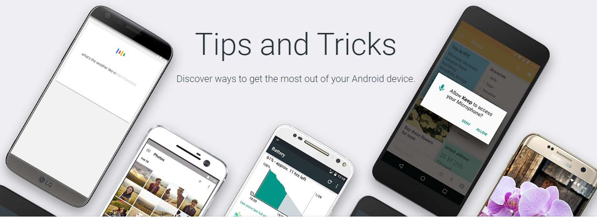

Software
Tips and tricks for mobile testing: A software tester?s roadmap
Mobile devices are growing in popularity daily and it is becoming more likely that software and Web applications will be run on tablets and smartphones. The importance of mobile testing is becoming increasingly crucial as a result.
My goal with this article is to provide some practical advice to keep you from getting lost in the world of mobile testing.
What first comes to your mind when you hear ?mobile testing?? Yes, it is all about devices.
How to choose a proper device for testing?
If you begin by answering the following questions, you will significantly decrease the number of required devices and avoid spending extra time and money:
1. Smartphones or tablets? Or both of them?
2. What is the earliest operating system (OS) version supported?
3. Which devices could be the most popular for the target audience?
4. What screen sizes and OS versions are not covered by the devices from the points 1-3?
When working with iOS, you need no more than 10 devices to test. No more than 20 Windows Phone devices are required ? for most of projects, you will need just five to 10.
As for Android, you will need a thorough approach while selecting, because hundreds of devices exist. Thus, it is really important to pick out the optimal combination.
How to test?
1. Analyze
Check the documentation and try to understand the business idea and application architecture properly. This allows you to find the most important basic defects to be fixed by developers first.
2. Functionality first, graphics later
Take the most popular device and perform the full test on it. You will notice all the application specs not covered by the documentation.
Ask questions regarding functional solutions you consider controversial and identify the most serious defects and bottlenecks of the app. Pay special attention to these issues during the compatibility test performed with less popular devices.
3. Include basic usability checks
Yes, we are testing the functionality, but basic usability issues could be easily ?caught? and submitted without even applying the usability standards and special checks.
For example, is the application logic too complicated? Are the help sections easy to understand? Can we confirm that tips and labels are marked well and easily seen given the application?s background color? These and many other questions could help to make the application more user-friendly.
4. Do not forget about the real environment
Ensuring the gathering of real environment results is the most important thing, so do not forget to check all the specific conditions device could experience during its usage. This process guarantees that users will not have problems with the application in the event of issues caused by:
? Unstable network connections.
? All types of interrupts (SMS, notifications from Calendar and other applications, calls, alarms and low battery notifications).
? Low battery or small free space volume available.
? Working with different time zones and GPS.
? Different combinations of sound and notifications settings.
? Various test sizes, blind mode and specific restrictions to the data usage.
5. Exploratory and ad hoc testing ? last, but not least
Even if you are convinced that all of the functions and possible environments have been covered properly, give yourself some time before deeming the results final.
Make some coffee, sit back and try to break the application first, or even ask someone from another team to take a fresh look. These types of steps can help to uncover sudden defects you missed before.
How to submit results?
The more information and descriptions you submit in your report, the more likely you are to fix and reproduce the defect.
1. Preconditions
The memory is almost overwhelmed? Or maybe five different accounts have been prepared? Or something is wrong with preinstalled applications? All of this information should be accurately mentioned.
2. Steps
This is the easy part ? just describe scrupulously what you do and what you see without missing steps.
3. Environment
Include surroundings and settings you used while testing:
? Device type and version.
? OS version should be indicated for each device.
? If the simulator/emulator was used to reproduce the defect that should be pointed out.
? If the defect was reproduced on every device except one or two, you should specify that fact, as it could be extremely helpful for the developer when finding and fixing the defect?s cause.
4. Expected result
This is where you explain the way the application is behaving or should behave after the bug is fixed.
Basically, this section provides actual instructions for the developer, details of how the application should work in the correct case and why in any case where the defect?s cause is not clearly identified.
5. Additional information
This section of the report allows you to give a complete picture of what has been done by the tester and the results that he or she achieved. The below items help the developer better define the battlefield:
? Screenshots
? Screen videos (if the screenshot is insufficient)
? Application logs: necessary to be attached to non-graphical defects. All log types should be enclosed (collected by the device itself, collected by additional applications such as CatLog for Android, collected with help of SDKs or other utilities, including Console in the iPhone Configuration Utility)
? Additional items that were used to reproduce the defect: all of the files, images, videos, provisioning profiles used to reproduce the defect must be affixed; sometimes one symbol in the file may cause the defect, and even logs could not reflect this.
Home Page